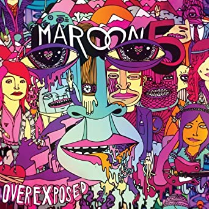
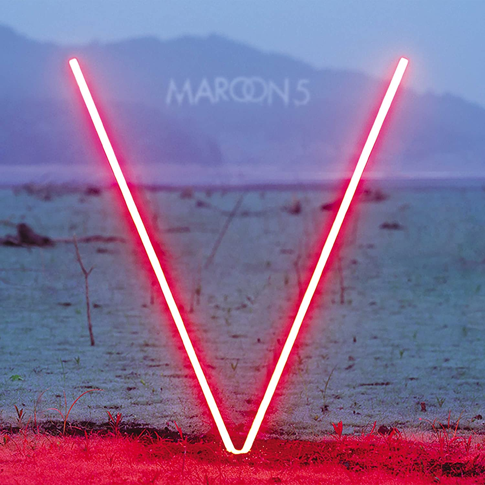
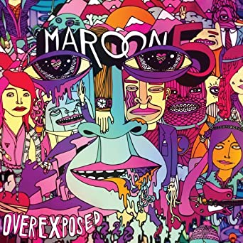
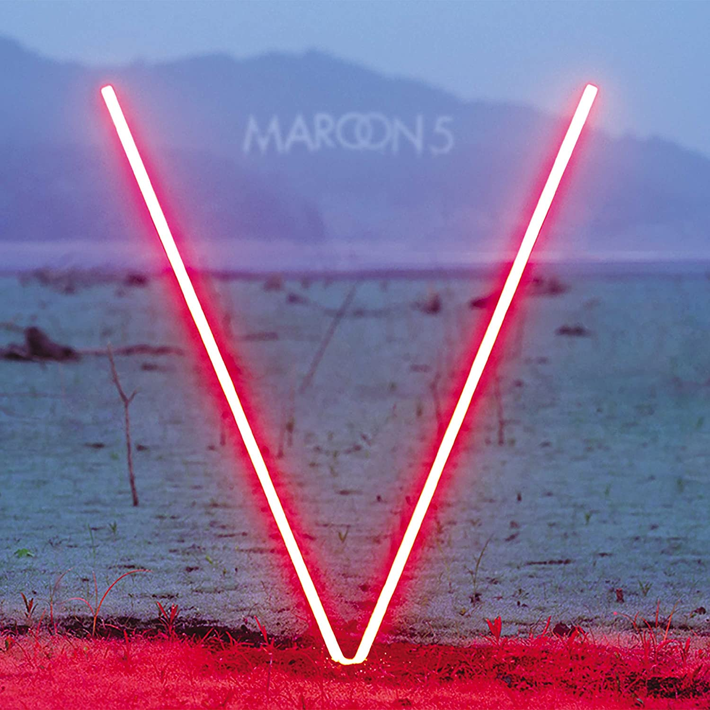

Songs about Jane
2002
10 Millones de copias

Overexposed
2012
2.2 Millones de copias

Biografía: |
Maroon 5 es una banda musical de pop rock estadounidense. Desde su debut en 2001, la banda ha vendido más de 30 millones de álbumes y 48 millones de sencillos mundialmente. Ganadores de tres Premios Grammy y trece nominaciones, la banda ha lanzado siete álbumes de estudio: Songs About Jane (2002), It Won't Be Soon Before Long (2007), Hands All Over (2010), Overexposed (2012), V (2014), Red Pill Blues (2018) y su último álbum Jordi (2021). |
Géneros Musciales: |
Canción más Escuchada: |
Discografía: |
|
Songs about Jane |
2002 |
10 Millones de copias |
 |
Overexposed |
2012 |
2.2 Millones de copias |
 |
V |
2014 |
2 Millones de copias |
Entre otros... |
Cónoce más sobre Maroon 5: |

|

|

|

|

|